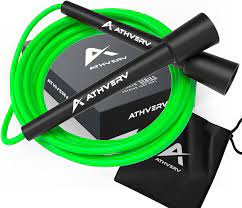
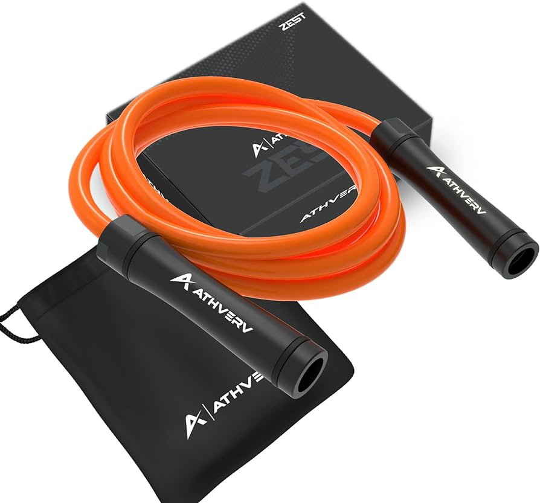

Types of Skipping Ropes
Beaded Ropes are meant for beginners as they are responsive

PVC ropes are extremely versatile. Can be used by beginners and experts Rope can be of varying length.

Weighted ropes help in body conditioning and burning calories. The weight of the ropes engages the full body
Freestyle ropes are short ropes with long handles. Used mainly for tricks and skills